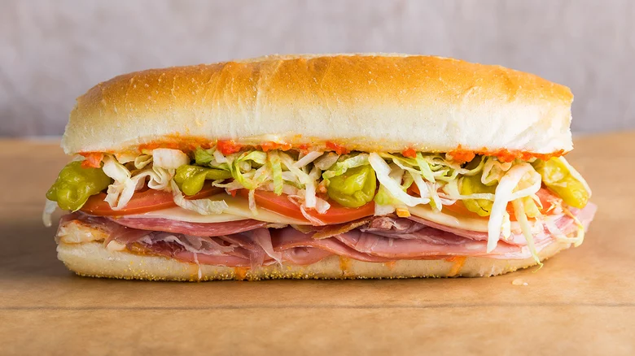

Italian Sub

The Italian sub is a sandwich with many different meats,
cheeses, and condiments. This sub in particular is a classic NY/NJ style Italian Sub.
Ingredients
- Kaiser Roll
- Three (3) slices of ham
- Three (3) slices of salami
- Three (3) slices of gabagool
- Two (2) slices of provolone cheese
- 1/2 cup of sliced lettuce
- 4 slices of tomato
- 1/4 cup of diced onions
- Mayo to preference
Directions
- Cut open roll
- Add meats to bottom of roll
- Add cheese
- Apply vegetables to the sandwich
- Add mayo to desired amount